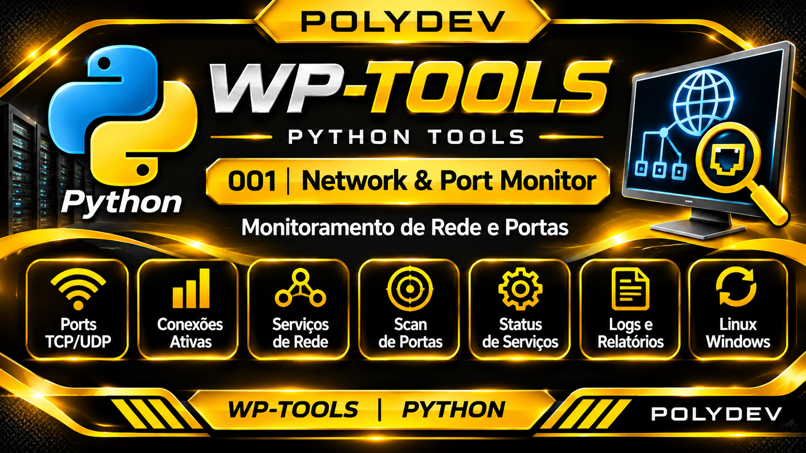

Objetivo
Ferramenta Python destinada à análise de conectividade de rede e à verificação de portas e serviços em ambientes Windows e Linux.
Funcionalidades previstas
- Verificação de conectividade TCP com host e porta informados.
- Consulta de disponibilidade de serviços de rede.
- Identificação de resultados e falhas de conexão.
- Registro de resultados para análise e diagnóstico.
- Operação em Windows e Linux, conforme validação de ambiente.
Identificação e estrutura
Categoria Supabase: wppy
Programa: wp-py-001-network-port-monitor
Banner: downloads/wp-ban/wp-py-001.png
Documentação: downloads/wp-html/wp-py-001.html
Fontes privados: E:\wppy\
Situação
Documentação inicial. A implementação Python, os argumentos de execução e os resultados de testes serão documentados após a homologação da ferramenta.